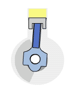

LIBRO DIGITAL INTERACTIVO
MÁQUINAS TÉRMICAS
Autor de escenas: José Luis San Emeterio Peña
Diseño del libro: Juan Guillermo Rivera Berrío
2016
1. Introducción
El desarrollo de las máquinas ha sido uno de los factores clave en el establecimiento de las modernas sociedades de bienestar.
En esta unidad pretendemos que comprendas el papel que han cumplido las máquinas a lo largo de la historia: primero como simples ahorradores de fuerza humana; después como artefactos capaces de aprovechar fuerzas naturales del tipo del viento o el agua; finalmente como aparatos sofisticados capaces de convertir unas formas de energía en otras, siempre a nuestro servicio.
También podrás aprender que la Naturaleza impone algunas limitaciones a estas transformaciones.
1.1 Una máquina simple
Las máquinas son artefactos destinados a disminuir el esfuerzo necesario para realizar tareas penosas. En la imagen ves una palanca, la máquina más simple de la historia. Utilizándola logramos levantar un gran peso con una fuerza relativamente pequeña.
En esta máquina ya aparece una característica muy generalizada en el mundo de las máquinas: el aprovechamiento de las características del movimiento circular (toda la palanca gira en torno al punto de apoyo).
En la siguiente página estudiamos otra máquina simple para definir la utilidad de esta clase de aparatos y comprender sus limitaciones.
1.2 Una máquina que ahorra energía
Ya hemos visto que las máquinas simples disminuyen la fuerza necesaria para realizar una tarea, pero no el trabajo que necesitamos para realizarla. A lo largo de la Historia hemos empleado muchas veces el trabajo animal para reemplazar el trabajo humano. Éste es, por ejemplo, el caso de la noria, movida tradicionalmente por un mulo o un buey.

Una alternativa mejor consiste en utilizar la energía de fenómenos naturales para transformarla en trabajo mecánico útil. No te costará mucho pensar qué tipo de transformación de energía puede realizar el molino de la imagen.
En la siguiente página puedes estudiar de cerca otro ejemplo de transformación de una energía natural en trabajo mecánico.
1.3 Conclusiones
Las máquinas son herramientas destinadas a disminuir el esfuerzo humano en cualquier tarea de transformación. Debemos destacar tres ideas simples:
Las máquinas simples (palancas, manivelas, poleas...) reducen la fuerza necesaria para realizar una tarea. Su idea común es que el momento de una fuerza, capaz de generar una rotación, depende de la fuerza aplicada y la distancia al eje de rotación. Aumentando esta distancia es posible conseguir grandes momentos con poco esfuerzo.
Las máquinas simples ahorran fuerza pero no trabajo. Si deseamos ahorrar trabajo mecánico, la forma de conseguirlo consiste en convertir en trabajo útil alguna otra forma de energía presente en la Naturaleza (energía eólica, energía hidráulica...)
En la revolución industrial que condujo a la Sociedad actual jugó un papel muy importante la energía térmica. En los siguientes apartados trataremos de su transformación en trabajo.
2.1 La experiencia de Joule
Cuando el vapor de agua sale de una olla a presión, su energía es capaz de hacer girar la válvula de la olla. Parte del calor que hemos comunicado al agua se está convirtiendo en trabajo mecánico. Del mismo modo, sabemos que frotando dos cuerpos, una forma de trabajo mecánico, se produce calor.
Así pues, el trabajo mecánico y el calor se pueden convertir el uno en el otro. ¿Cuál es la relación de conversión? El conocido científico J. Joule diseño una experiencia que le permitía convertir energía mecánicaen energía térmica en condiciones controladas para medir la equivalencia entre ambas formas de energía.
En la siguiente página simulamos, de forma muy simplificada, la experiencia de Joule.
2.1 La experiencia de Joule
La pesa posee una forma de energía que se puede convertir en calor
2.2 El primer principio de la termodinámica
Cuando calentamos una olla a presión, el calor que suministramos al agua se emplea en aumentar la temperatura del agua, evaporar parte del líquido y en producir un trabajo mecánico sobre la válvula de seguridad al escaparse el vapor a través de ella. El calor de partida se ha repartido en diferentes formas de energía.
El primer principio de la Termodinámica establece cómo se produce este reparto
.En la siguiente página tratamos de redescubrir este primer principio explorando un sistema muy simple: en un recipiente cuyas paredes absorben una cantidad despreciable de calor hay un gas. La tapa superior del recipiente es deslizante; puede ascender o descender según la presión del gas, a menos que la fijemos expresamente para mantener el volumen constante.
2.2 El primer principio de la termodinámica
Los puntos simulan moléculas. Representamos 0,1 moles por 10 moléculas (todos sabemos que, en realidad son muchas más).
2.3 Conclusiones calor y energía mecánica
El calor necesario para que un gramo de agua aumente un grado su temperatura es una caloría. La experiencia de Joule establece que una caloría equivale a 4,18 J.
El primer principio de la Termodinámica podría enunciarse así:
Q = W + AU
Q es el calor que el sistema gana o pierde, W es el trabajo producido y AU es la variación de la energía interna del sistema.
Cuando calentamos o enfriamos un sistema a volumen constante no se produce trabajo y el calor recibido o perdido se traduce en un aumento o descenso de la temperatura.
Cuando calentamos un sistema a presión constante se produce un trabajo: W= P·AV donde P es la presión y AV es la variación de volumen del sistema.
3.1 El movimiento continuo
Seguro que conoces el pequeño aparato de la figura. En él se produce transformación de energía potencial en cinética y viceversa. ¿Puedes identificar estas transformaciones?.
 Una vieja aspiración de la Humanidad, de la que han surgido diseños de numerosos aparatos, consiste precisamente en lograr un artefacto que convirtiera alguna forma de energía (eléctrica, térmica etc) en energía cinética, que a su vez se convertiría de nuevo en la forma de energía anterior.
Una vieja aspiración de la Humanidad, de la que han surgido diseños de numerosos aparatos, consiste precisamente en lograr un artefacto que convirtiera alguna forma de energía (eléctrica, térmica etc) en energía cinética, que a su vez se convertiría de nuevo en la forma de energía anterior.
Así obtendríamos un ciclo sin fin que llamaríamos movimiento continuo.
¿Es posible el movimiento continuo? Para poder responder esta pregunta comenzaremos por analizar el funcionamiento del aparato que se muestra en la imagen. En la siguiente página podrás realizar este análisis. En ella hemos supuesto que tratamos sólo con dos bolas de masas idénticas suspendidas de hilos de 1 m. de longitud.
3.2 Segundo principio de la Termodinámica
En la escena de la página anterior has notado como en la conversión entre dos formas de energía no se puede conseguir un ciclo perfecto. Siempre hay alguna pérdida a lo largo del ciclo.
Aunque sólo lo hayamos visto en un caso muy sencillo, en todos los ingeniosos dispositivos de movimiento continuo ideados por el hombre ha ocurrido lo mismo. Incluso ha habido casos de notorios estafadores que idearon falsos móviles perpetuos (uno de ellos llegó incluso a engañar al Zar Pedro I, el Grande, el personaje del monumento)
Finalmente, se aceptó el llamado Segundo principio de la Termodinámica que podríamos enunciar así: No es posible conseguir un móvil perpetuo basado en la continua conversión recíproca entre dos formas de energía.
.Como en muchas máquinas actuales se utiliza el calor como generador del movimiento, en la escena siguiente examinamos qué forma tiene el segundo principio para máquinas que funcionan con energía de origen térmico.
3.2 Segundo principio de la Termodinámica
Esquema general del Segundo Principio de la Termodinámica
3.3 Conclusiones sobre el segundo principio
El segundo principio se puede enunciar de varias formas alternativas::
No es posible construir un móvil perpetuo basado en la conversión cíclica entre dos formas de energía. Inevitablemente, en alguna parte de este ciclo se perderá energía, preferentemente en forma de calor.
Una máquina térmica extrae energía de una fuente caliente. De esta energía una parte se convierte en trabajo mecánico y otra se cede a una fuente fría. De una forma más resumida: Q1=W+Q2
donde Q1 es el calor que se extrae de la fuente caliente, Q2 es el que se cede a la fuente fría y W el trabajo realizado. El rendimiento de la máquina será R=W/Q1 El máximo rendimiento de una máquina térmica sería:
donde T1 es la temperatura de la fuente caliente y T2 es la temperatura de la fuente fría.
4.1 La máquina ideal de Carnot
Conocidas las limitaciones que nos impone la Termodinámica, el ingeniero Carnot diseño un modelo de máquina que las podía satisfacer... Se trata de un modelo teórico, no real, pero en él ya se ven las características fundamentales de los motores térmicos reales:
El sistema se basa en fenómenos de expansión y contracción de gases por ganancia y pérdida de calor. El trabajo de expansión y contracción de los gases puede ser convertido en el movimiento circular típico de la mayoría de las máquinas con facilidad.
|  | El pistón, mecanismo que vemos en la figura, es el encargado de convertir sus desplazamientos en un movimiento circular, que podremos convertir posteriormente en desplazamiento de un vehículo, movimiento de una grúa, de un robot, etc. |
La siguiente página te ayudará a comprender el diseño de Carnot.
4.2 Una máquina real
En los motores reales de combustión, la energía se extrae quemando algún combustible, previamente inyectado en el cilindro, finamente pulverizado y mezclado con oxígeno. Después, la mezcla combustible es comprimida y quemada violentamente.
La energía de esta combustión mueve el pistón en varias fases, como se aprecia en la figura adjunta. |
En la siguiente página estudiamos, de manera aproximada, el ciclo de un motor de combustión moderno y tratamos de explicar estas fases.
4.3 Conclusiones sobre máquinas térmicas
Como modelo teórico de motor, el ciclo de Carnot se basa en someter a un gas a cuatro fases: expansión a presión constante, recibiendo calor de una fuente caliente; expansión adiabática, sin perder o ganar calor, contracción a presión constante, cediendo calor a una fuente fría, contracción adiabática.
El motor de combustión real se basa en la inyección de la mezcla combustible pulverizada, su comprensión y explosión, finalizando con la compresión y expulsión de los gases de escape.
En ambos casos, el movimiento del pistón transforma la expansión y contracción de gases en un movimiento circular aprovechable para usos mecánicos.